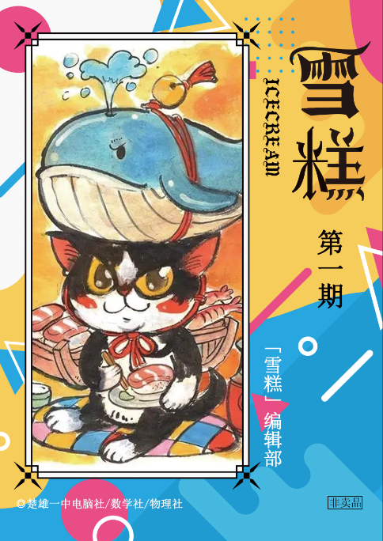

《雪糕》第一期

新闻评论
「东数西算」简介
动态清零：要保护生命，也要保护经济
南宁为何有那么多烂尾楼
假期的黄山景区冷冷清清
疫情中谁在捣乱
短讯
文艺欣赏
什么是美？朱光潜谈美
苏轼有哪些惊艳的诗词？
文学的社会价值
真正的鲁迅是沉默的
《金瓶梅》中女性的心理分析
经典咏流传：长恨歌
16 世纪和 17 世纪的音乐
2021流行音乐推荐
如何评价 2019 电影《小丑》？
《觉醒年代》：为何看得这么爽
科技前沿
自动驾驶离我们还有多远
人脑细胞在培养皿中学会打游戏
浙大智能机器人完成自主编队成群飞行
我国科学家发明二氧化碳还原合成葡萄糖新方法
任正非谈科技发展方向
电子战：未来大战的模式
数理逻辑
由万有引力定律推导行星轨道形状
详解量子加密（通俗版）
简明解释哥德尔不完备定理
“群论”研究些啥？
为什么在计算器上计算cos Ans总是趋近于0.739？
一种手动开根号的方法
浅谈“不动点”求数列通项的方法
工程师和科学家的思维方式有什么重要区别？
数学妙题（1）
历史人文
什么是哲学？如何学哲学？
中国哲学的精神
《世说新语》连载专栏（1）
农业革命——《人类简史》
中华尚食之道里，自有一个民族坚韧的初心
中国的战略思维：对于“势”的关注
邓小平都有哪些巨大贡献？
苏格拉底：未经省察的人生没有价值
国际视野
我为什么选择去非洲？
援助非洲给中国带来了什么？
首位非洲建筑师获行业最高奖，他让穷人拥有品质生活
北欧的高福利靠什么来支撑？
锐观点
我们处于一个怎样的网络时代?
警惕网络「信息茧房」效应
世界不是由天才创造的
29岁：把握流动里的凝定
知乎问答选（1）
新青年
曹丰泽：我要证明，理想主义的路是走得通的
大学里绝对精致的利己主义者
奥数天才付云皓坠落？——在脚踏实地处
谈谈中美教育
认知生理学视角下的青年烦恼与青年政治
一线见闻
苦瘠之地脱贫记
当教师到底是一种什么感觉？
当“小镇做题家”成为连接者
上海隔离感受：从小没挨过饿，就不知道囤粮
机械行业的待遇问题
她最终放弃了博士学位
社会观察
全职村干部，官瘾有多大 - 半月谈
圆圈正义与安提戈涅
七成清北毕业生进体制内
免费：一种颠覆性的力量
「圆桌对话」开创人类人权文明新境界
思辨时间
精英主义最大的问题是什么？
民粹主义是什么？
生物演化中，「弱者」是否有存在的价值？
现行的高中语文教育有哪些方面不够合理？
身心健康
努力和睡眠哪个重要?
哪些营养物质能促进大脑发育？
功绩社会，制造抑郁症患者
真正抑郁的人是什么样的？
“爱情是多巴胺的作用，两年左右就消失”？
万念俱灰时，如何调节自己？
不喜欢竞争是什么心理？
知识科普
反对「元宇宙」
量子理论中的“意识”是什么？
计算机的原理是什么？
气候变暖与经济学中的外部效应
噬菌体侵染细菌，是不是自杀？
逻辑学中的推理
科普短篇（1）
学习方法/成功学
《如何阅读一本书》摘要
什么是心流？
升级自己的「心智模式」
阅读经典
《全频带阻塞干扰》
《草房子》试读
《狂人日记》等三篇
《项链》及解析
《给青年的十二封信》
===电子版特有===
文艺
诗云 - 刘慈欣
《少年维特的烦恼》：压垮骆驼的最后一根稻草
技术
均值不等式简介
角格点问题的通解方法
“角格点”问题完全分类与通解
递推数列的特征方程与特征根
遗传算法是什么？基于Python
时文
失业的文学观察
收割青小麦当饲料，此事要展开说方能理解透彻！
中科院因费用昂贵停用知网数据库
为什么学生就得更尊敬老师？
同济大学志愿者的一句“赤佬”，正引发着今年最大的解构狂欢
440亿美元买下推特后，还有谁敢逼马斯克纳税？
北理工大学的仿生电子鼠会做灾后搜救了
为什么劝退化工专业？
人文
海德格尔：科技奴役人
中国古代地方行政制度与行政区划
对“老漂族”的新研究
心理
为什么放弃治疗会成为一种心理治疗？
我自杀前24小时
知乎
如何评价中国现在的教育？
科普
数学：我怎么可能想到？！
为什么植物没有进化出大脑或者思想体？
化工过程概述
亚文化
目前中国有哪些亚文化？
从美术设计框架看《魔法少女小圆》